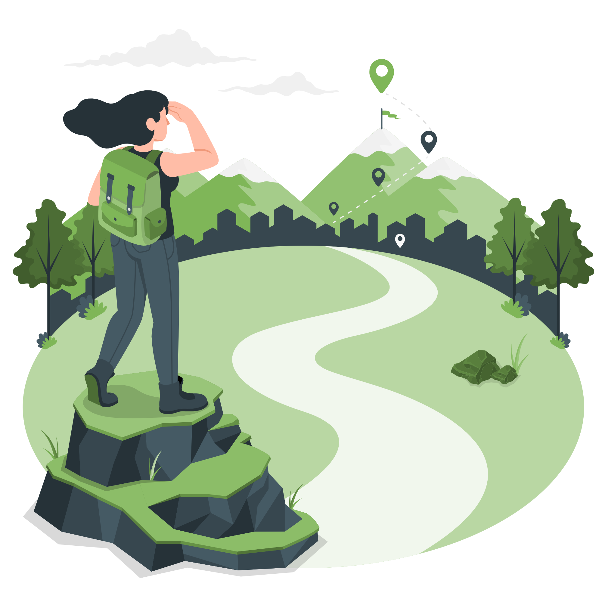

Contexte
Une application née d’un besoin simple : voyager autrement, sans se perdre ni se priver. Ne pas chercher la perfection, juste des alternatives concrètes : des idées de destinations accessibles en train, des astuces pour camper sans stress, des lieux écoresponsables où se sentir bien. Alors, on a imaginé une application pour aider à franchir le pas. Une appli qui ne juge pas, mais qui guide. Qui inspire, conseille, rassure. Parce que faire mieux, c’est déjà beaucoup. Et parce que derrière chaque petite action, il y a un pas vers un voyage plus libre, plus doux, plus vivant, plus éco.
Problèmatique
Comment Marie peut-elle transformer ses habitudes de voyage pour répondre aux enjeux écologiques sans perdre le confort qu’elle valorise ?
Pour qui?
Cette application a pour but d'encourager les personnes éloignées du monde écologique à s’en rapprocher et à adapter davantage leurs habitudes en faveur de l’écologie dans le domaine du voyage.
25%
de croissance anuelle pour l’eco tourisme
Source : Organisation Mondiale du Tourisme - OMT
45%
des Français envisagent de modifier leurs habitudes de vacances pour 2023 en raison des événements climatiques
Source : Industries Hotelière
87%
des voyageurs veulent un tourisme plus durable
Source : Booking.com

User flow
La solution
Low Fi

Page d'accueil et planning

Ecran de sélection choix hébergement

Modification écologique
Mid Fi


HightFI - Prototype
Retours tests utilisateurs
“Fixer les barres en haut et en bas pour qu’elles ne bougent pas lors du scroll”

Avant

Après
“Carte à harmoniser”

Avant

Après
“Remplacer “Valider” par “Réserver mon voyage””

Avant

Après
Futures améliorations :
- Éviter que les icônes de logement et d’activités sportives ne se déplacent lorsque le point joker apparaît.
- Fixer l’en-tête de la page alternative.
- Changer les images de la page récapitulative.